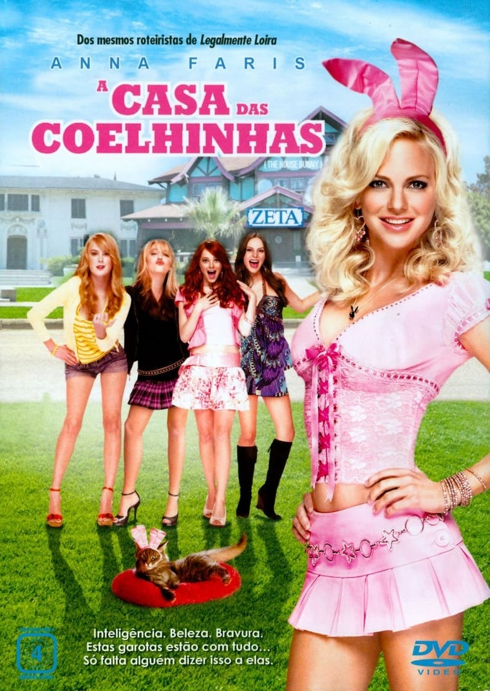
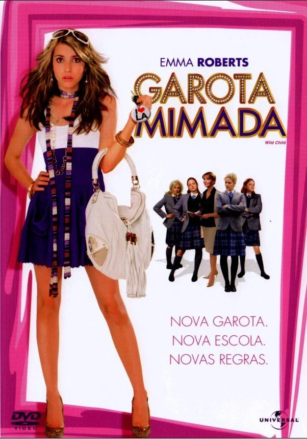

O Amor Não Tira Férias (The Holiday, 2006): Nesta comédia romântica, duas mulheres de mundos diferentes – Iris (Kate Winslet) de Londres e Amanda (Cameron Diaz) de Los Angeles – decidem trocar de casa durante as férias para fugir de suas desilusões amorosas.
...
Ao se adaptarem às novas rotinas e conhecerem novas pessoas, incluindo Graham (Jude Law) e Miles (Jack Black), ambas começam a se redescobrir e encontrar possibilidades de amor onde menos esperavam.
O filme explora o poder da amizade, do autoconhecimento e dos começos inesperados, tudo com uma atmosfera calorosa e divertida.
Vestida Para Casar
Sinopse
Vestida para Casar (27 Dresses, 2008): Jane (Katherine Heigl) é a dama de honra perfeita e já esteve em 27 casamentos de amigas, sempre ajudando os outros com um sorriso.
Apesar de ser romântica e sonhar com seu próprio casamento, ela nunca teve a chance de viver essa experiência.
...
Quando sua irmã mais nova fica noiva do homem por quem Jane é secretamente apaixonada, ela precisa lidar com seus sentimentos e repensar sua própria felicidade.
Com uma boa dose de humor e romance, o filme explora as complicações dos relacionamentos e a importância de se priorizar.
Ligeiramente Grávidos
Sinopse
Ligeiramente Grávidos (Knocked Up, 2007): Esta comédia romântica traz a história de Alison (Katherine Heigl), uma jovem ambiciosa que tem uma noite de bebedeira com Ben (Seth Rogen), um cara despretensioso e imaturo.
...
Quando ela descobre que está grávida, ambos precisam lidar com as responsabilidades que vêm com a notícia e tentam encontrar um jeito de fazer a relação funcionar, mesmo sendo tão diferentes.
Com humor e um olhar sobre o inesperado na vida, o filme aborda o crescimento pessoal e a complexidade de se formar uma família.
A Verdade Nua e Crua
Sinopse
A Verdade Nua e Crua (The Ugly Truth, 2009): Abby (Katherine Heigl) é uma produtora de TV que acredita no amor ideal, enquanto Mike (Gerard Butler) é um apresentador que vê os relacionamentos de forma cínica e objetiva.
...
Quando Mike é contratado para salvar o programa de Abby, eles começam a trabalhar juntos, e ele decide ajudá-la a conquistar um homem com seus “truques infalíveis”. No meio das lições e dos conflitos, os dois percebem que podem estar mais próximos do que imaginavam.
A história traz uma combinação de romance e ironia, questionando as expectativas do amor.
Esposa de Mentirinha
Sinopse
Esposa de Mentirinha (Just Go with It, 2011): Danny (Adam Sandler) é um cirurgião plástico que finge estar em um casamento fracassado para conquistar mulheres.
Mas quando ele conhece Palmer (Brooklyn Decker) e deseja algo mais sério, precisa inventar uma esposa de mentira para convencer a namorada.
...
Ele então pede ajuda a sua assistente Katherine (Jennifer Aniston), que finge ser sua esposa em um esquema que se complica e acaba levando todos para uma viagem ao Havaí.
Lá, Danny e Katherine começam a ver que a farsa pode estar mais próxima da realidade do que imaginavam.
Três Vezes Amor
Sinopse
Três Vezes Amor (Definitely, Maybe, 2008): O filme acompanha Will Hayes (Ryan Reynolds), um publicitário em processo de divórcio, que relembra sua história romântica a pedido de sua filha pequena, Maya.
...
Contando sobre três amores passados, ele esconde as identidades reais das mulheres, e Maya tenta adivinhar quem é a mãe dela.
Através de lembranças cheias de momentos engraçados e emocionantes, Will revisita decisões e sentimentos, descobrindo novas perspectivas sobre o amor e a felicidade.
Guerra é Guerra!
Sinopse
Guerra é Guerra (This Means War, 2012): Dois agentes da CIA, FDR (Chris Pine) e Tuck (Tom Hardy), descobrem que estão saindo com a mesma mulher, Lauren (Reese Witherspoon), e entram em uma competição cheia de espionagem e artimanhas para conquistá-la.
...
Enquanto os dois usam todos os recursos e habilidades para ganhar o coração de Lauren, ela precisa decidir entre dois tipos de relacionamento e aprender sobre o que realmente quer.
O filme mistura ação, romance e comédia de uma forma leve e envolvente.
Qual Seu Número?
Sinopse
Qual Seu Número? (What's Your Number?, 2011): Ally (Anna Faris) é uma jovem que descobre, por uma pesquisa, que pode ter desperdiçado o amor da sua vida entre seus ex-namorados.
...
Determinada a não aumentar seu "número", ela decide revisitar antigos relacionamentos para ver se algum deles era, na verdade, o parceiro ideal.
Com a ajuda de seu vizinho charmoso, Colin (Chris Evans), ela se lança em uma aventura cheia de encontros desastrosos, humor e surpresas.
A Casa das Coelhinhas

Sinopse
A Casa das Coelhinhas (The House Bunny, 2008): Shelley (Anna Faris) é uma coelhinha da Playboy que, após ser expulsa da mansão, fica sem rumo até encontrar abrigo na Zeta Alpha Zeta, uma fraternidade universitária desajeitada e prestes a perder sua casa no campus.
...
Shelley ensina as garotas a se tornarem populares e confiantes, enquanto elas a ajudam a encontrar um propósito maior para sua vida.
Com muito humor, o filme fala sobre autoaceitação, amizade e encontrar o próprio valor.
Garota Mimada

Sinopse
Garota Mimada (Wild Child, 2008): Poppy Moore (Emma Roberts) é uma adolescente mimada de Malibu que, após uma série de travessuras, é enviada pelo pai a um rigoroso internato britânico.
...
No começo, ela tenta de tudo para ser expulsa, mas, ao fazer amizades e descobrir quem realmente é, Poppy começa a mudar sua visão sobre o que significa crescer e aprender com os outros.
A história explora amizade, amadurecimento e encontrar um equilíbrio entre liberdade e responsabilidade.